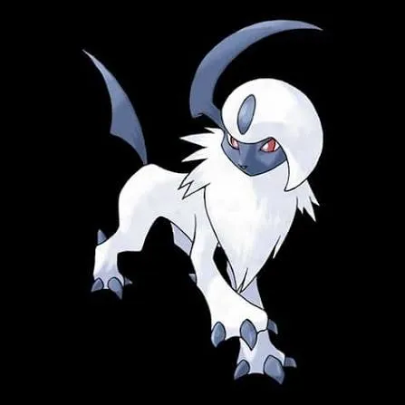
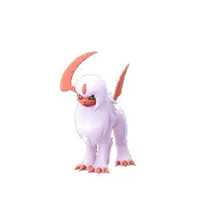
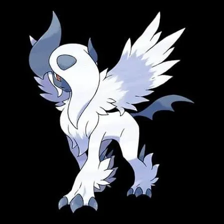
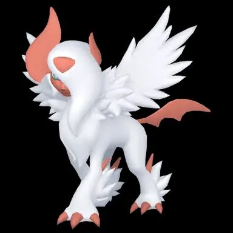

🧭 Quick Navigation
📖 Introduction
Mega Absol focuses on high attack rather than defense, allowing trainers with strong Fighting-type Pokémon to defeat it quickly in raids.
The Mega Evolution of Absol, Mega Absol is a pure Dark-type Pokémon that appears in Mega Raids in Pokémon GO. While it is capable of dealing strong Dark-type damage, it is considered one of the easier Mega Raid bosses when players bring the correct counters.
Because Mega Absol is a Dark-type Pokémon, it is weak to Fighting, Fairy, and Bug-type attacks. Fighting-type Pokémon in particular are extremely effective and can defeat Mega Absol quickly when used by multiple trainers.
Mega Absol is useful because:
- It boosts Dark-type attackers
- It is one of the strongest Dark-type attackers in the game
- It is excellent against Psychic and Ghost-type raid bosses
In this guide, we will cover Mega Absol’s weaknesses, the best Pokémon counters, catch CP ranges, shiny availability, and expert raid strategies. With the right preparation and team composition, trainers can defeat Mega Absol efficiently and earn valuable Mega Energy rewards.
🧠 Mega Absol Raid Strategy
Mega Absol is a pure Dark-type Pokémon known for its extremely high attack but very low defense. This makes it a classic glass cannon raid boss — it can deal heavy damage, but it also faints quickly when hit with strong counters.
Because of this, Mega Absol raids are considered easy to moderate difficulty. Trainers using the right counters can defeat it quickly, even with small groups.
- ⚔️ Use Fighting or Fairy-type Pokémon for maximum damage
- ⚡ Focus on high DPS attackers to defeat it faster
- 🛡️ Dodge charged moves like Dark Pulse to increase survival
- 👥 Coordinate Mega Evolution boosts with your team
Related guides: Mega Abomasnow | Mega Aerodactyl
Raid Difficulty
This raid typically requires 3–5 trainers depending on player level, counters, and weather conditions.
About Absol
Absol is known as the Disaster Pokémon in the Pokémon series. It is often associated with natural disasters because it appears before earthquakes, floods, and other calamities.
Despite its reputation, Absol is not responsible for these disasters. Instead, it senses environmental changes and warns people of danger.
About Mega Raids in Pokémon GO
Mega Raids in Pokémon GO are special raid battles where trainers defeat Mega-Evolved Pokémon to earn Mega Energy. These raids allow players to Mega Evolve their Pokémon, providing powerful damage boosts during future battles.
💡 Expert Insight
Mega Absol is a high-risk, high-reward raid boss due to its extremely high attack stat combined with very low defensive bulk. While it can deal significant damage with Dark-type moves, it is also one of the fastest Mega raids to defeat when using proper counters.
Its pure Dark typing makes Fighting-type Pokémon the most reliable and effective choice, offering both strong damage output and resistance to its Dark-type attacks. Fairy and Bug-type counters can also perform well, but Fighting-types generally provide the best balance of power and survivability.
Because of its low bulk, Mega Absol is an excellent target for farming Mega Energy efficiently. Even smaller groups or mid-level players can complete this raid quickly, especially when supported by Mega Evolution boosts and proper team coordination.
For optimal performance, players should focus on fast, high-DPS attackers rather than defensive Pokémon, as the battle duration is typically short. Dodging charged moves can further improve survivability, but in most cases, maximizing damage output is the key to a fast and successful clear.
📊 Mega Absol Stats
Mega Absol has extremely high offensive power, making it capable of dealing massive damage during raid battles. However, its low defense means it can also be defeated relatively quickly.
| Type | Dark |
| Max CP (Absol) | 3732 |
| Weather Boost | Foggy |
| Shiny | Yes |
| Base Attack | 314 |
| Base Defence | 130 |
| Base Stamina | 163 |
Because of its very high attack stat, Mega Absol can be dangerous if trainers are not prepared with the right counters.
🎯 Catch CP & 100% IV
After defeating Mega Absol, trainers will encounter normal Absol that can be caught.
CP Range:
- No Weather Boost: 1,799-1,886 CP
- Weather Boost: 2,249-2,358 CP
100% IV:
- 1886 (Normal)
- 2358 (Weather Boosted)
Use:
- Golden Razz Berry
- Curveball Excellent Throws
⚠️ Mega Absol Weaknesses
Mega Absol is a pure Dark-type Pokémon, which gives it several weaknesses. Using these types will help defeat Mega Absol much faster.
| Category | Details |
|---|---|
| ❌ Weak To: |
 Fighting • Fighting •
 Bug • Bug •
 Fairy Fairy
|
| ✅ Resistant / Immune To: |
 Ghost • Ghost •
 Psychic • Psychic •
 Dark Dark
|
Notes: As a pure Dark-type Pokémon, Mega Absol is weak to Fighting, Bug, and Fairy-type attacks. Among these, Fairy and Fighting-types like Togekiss, Gardevoir, Machamp, and Lucario are the safest and most reliable choices because they also resist many of Absol’s Dark-type moves.
🗡️ Best Counters for Mega Absol
Mega Absol’s relatively low bulk means high DPS attackers can defeat it quickly. Fighting- and Fairy-type Pokémon are generally the best options.
🥊 Fighting-Type Counters (Top Choice)
Fighting-type Pokémon are the strongest counters against Mega Absol. They deal super-effective damage and typically have high attack stats. Fast moves like Counter combined with charged moves such as Dynamic Punch or Aura Sphere provide excellent performance.
Using a Mega Fighting-type Pokémon boosts all Fighting-type damage in the raid. Proper coordination ensures maximum efficiency.
- Buzzwole: (Counter / Superpower)
- Conkeldurr: (Counter / Dynamic Punch)
Strong fighting damage with excellent survivability.
High attack stat and reliable fighting moves.
✨ Fairy-Type Counters
Fairy Pokémon are also strong choices. They deal super-effective damage and often provide better durability against Dark-type attacks compared to some Fighting Pokémon.
A Mega Fairy Pokémon can significantly increase total raid damage if most trainers are using Fairy-type attackers.
- Togekiss: (Charm / Dazzling Gleam)
Fairy typing resists Dark attacks.
🐛 Bug-Type Options
Bug Pokémon deal super-effective damage, but they are generally less powerful than Fighting or Fairy types. They can be used as backup attackers if needed.
- Heracross: (Counter / Megahorn)
Excellent DPS against Dark-types
🔥 Why Fighting & Fairy Counters Are Best
Mega Absol is weak to Fighting, Fairy, and Bug-type attacks. Among these, Fighting and Fairy-type Pokémon perform best due to their high damage output and strong move sets.
Pokémon like Lucario, Machamp, and Gardevoir are top choices because they deal consistent super-effective damage while resisting some of Mega Absol’s attacks.
- 🥊 Fighting-types provide high DPS and fast attacks
- ✨ Fairy-types counter Dark moves effectively
- 🐛 Bug-types work but are generally weaker options
Since Mega Absol is a pure Dark-type attacker, counters that resist Dark and hit super-effectively — like Fighting and Fairy types — are the most reliable choices.
🏆 Best Regular Counters
Regular pokemon that amplify the right types give you a powerful edge. Below are top Regular counters with short notes on why they excel.
| Pokémon | 🗡️ Fast Moves | 💥 Charged Moves | 🔄 Elite Moves | 🏆 Best Moves | 🧪 Why This Counter Works |
|---|---|---|---|---|---|
| Keldeo(Resolute) | Low Kick / Poison Jab | Close Combat / Sacred Sword / X-Scissor / Aqua Jet / Hydro Pump | None | Low Kick and Sacred Sword | Fighting typing deals super-effective damage to Dark. Sacred Sword provides high DPS with strong neutral bulk. |
| Terrakion | Double Kick / Smack Down / Zen Headbutt | Close Combat / Earthquake / Rock Slide | Sacred Sword | Double Kick and Sacred Sword | Double Kick + Sacred Sword deals strong super-effective Fighting damage while Terrakion’s high Attack boosts DPS. |
| Lucario | Counter / Bullet Punch | Close Combat / Power-Up Punch / Aura Sphere / Shadow Ball / Flash Cannon / Meteor Mash / Blaze Kick / Thunder Punch | Force Palm | Counter and Aura Sphere | Counter + Aura Sphere is one of the highest DPS Fighting combos and resists Dark-type moves. |
| Zacian | Metal Claw / Air Slash | Play Rough / Close Combat / Giga Impact / Behemoth Blade | None | Air Slash and Play Rough | Fairy typing hits Dark super-effectively while Zacian has very high Attack stat for strong raid damage. |
| Keldeo Ordinary | Low Kick / Poison Jab | Close Combat / Sacred Sword / X-Scissor / Aqua Jet / Hydro Pump | None | Low Kick and Sacred Sword | Fighting typing deals super-effective damage to Dark. Sacred Sword provides high DPS with strong neutral bulk. |
| Kartana | Air Slash / Fury Cutter / Razor Leaf | Sacred Sword / Aerial Ace / X-Scissor / Leaf Blade / Night Slash | None | Razor Leaf and Leaf Blade | High Attack stat gives neutral DPS, but it does not hit super-effectively. Backup option only. |
| Blaziken | Ember / Counter / Fire Spin | Focus Blast / Brave Bird / Overheat / Blaze Kick / Aura Sphere | Blast Burn / Stone Edge | Counter and Blast Burn | Counter provides super-effective Fighting damage while high Attack allows fast raid clears. |
| Urshifu | Sucker Punch / Rock Smash / Counter | Brick Break / Close Combat / Dynamic Punch / Payback | None | Rock Smash and Close Combat | Fighting typing directly counters Dark, and Close Combat deals heavy super-effective burst damage. |
| Conkeldurr | Counter / Poison Jab | Dynamic Punch / Focus Blast / Stone Edge | Brutal Swing | Counter and Dynamic Punch | Counter + Dynamic Punch is a reliable super-effective Fighting combo with strong bulk. |
| Zamazenta | Metal Claw / Ice Fang | Giga Impact / Moonblast / Close Combat / Behemoth Bash | None | Ice Fang and Close Combat | Close Combat provides strong Fighting-type super-effective damage against Dark typing. |
| Enamorus | Zen Headbutt / Astonish / Fairy Wind | Dazzling Gleam / Grass Knot / Fly | None | Fairy Wind and Dazzling Gleam | Fairy typing deals super-effective damage and resists Dark-type moves, increasing survivability. |
| Tapu Koko | Quick Attack / Volt Switch | Brave Bird / Thunder / Thunderbolt / Dazzling Gleam | Nature's Madness | Volt Switch and Dazzling Gleam | Fairy charged move Dazzling Gleam hits Dark super-effectively while maintaining decent speed. |
👤 Best Shadow Counters
Shadow Pokémon that amplify the right types give you a powerful edge. Below are top Shadow counters with short notes on why they excel.
| Pokémon | 🗡️ Fast Moves | 💥 Charged Moves | 🔄 Elite Moves | 🏆 Best Moves | 🧪 Why This Counter Works |
|---|---|---|---|---|---|
| Shadow Blaziken | Ember / Counter / Fire Spin | Focus Blast / Brave Bird / Overheat / Blaze Kick / Aura Sphere | Blast Burn / Stone Edge | Counter / Fire Spin and Overheat | Shadow boost increases Fighting DPS significantly, making it one of the fastest raid damage dealers. |
| Shadow Conkeldurr | Counter / Poison Jab | Dynamic Punch / Focus Blast / Stone Edge | Brutal Swing | Counter / Poison Jab and Focus Blast | Shadow boost + Counter/Dynamic Punch creates extremely high super-effective DPS. |
| Shadow Hariyama | Counter / Force Palm / Bullet Punch | Close Combat / Dynamic Punch / Superpower / Upper Hand / Heavy Slam | None | Counter and Close Combat | Shadow attack boost improves Fighting damage output while maintaining reasonable bulk. |
| Shadow Machamp | Counter / Bullet Punch | Dynamic Punch / Close Combat / Cross Chop / Rock Slide / Heavy Slam | Karate Chop / Submission / Stone Edge / Payback | Counter and Close Combat | Shadow Counter + Dynamic Punch provides some of the highest super-effective DPS available. |
| Shadow Raikou | Thunder Shock / Volt Switch | Aura Sphere / Shadow Ball / Thunder / Thunderbolt / Wild Charge | None | Volt Switch and Aura Sphere / Shadow Ball / Thunder | High raw DPS from Shadow boost, but does not hit super-effectively. Backup option only. |
⚡ Best Mega Counters
Mega Pokémon that amplify the right types give you a powerful edge. Below are top Mega counters with short notes on why they excel.
| Pokémon | 🗡️ Fast Moves | 💥 Charged Moves | 🔄 Elite Moves | 🏆 Best Moves | 🧪 Why This Counter Works |
|---|---|---|---|---|---|
| Mega Lucario | Counter / Bullet Punch | Close Combat / Power-Up Punch / Aura Sphere / Shadow Ball / Flash Cannon / Meteor Mash / Blaze Kick / Thunder Punch | Force Palm | Counter and Close Combat | One of the strongest Fighting Megas; boosts all Fighting teammates while dealing massive super-effective DPS. |
| Mega Blaziken | Counter / Fire Spin / Ember | Focus Blast / Aura Sphere / Brave Bird / Overheat / Blaze Kick | Stone Edge / Blast Burn | Counter / Fire Spin and Overheat | Provides Fighting team boost while delivering very high super-effective damage. |
| Mega Heracross | Counter / Struggle Bug | Close Combat / Upper Hand / Earthquake / Rock Blast / Megahorn | None | Struggle Bug and Earthquake | Fighting typing hits Dark super-effectively while boosting Bug/Fighting teammates. |
| Mega Gardevoir | Magical Leaf / Charge Beam / Confusion / Charm | Shadow Ball / Psychic / Triple Axel / Dazzling Gleam | Synchronoise | Charm and Shadow Ball / Dazzling Gleam | Fairy typing deals super-effective damage and boosts Fairy teammates during raid. |
| Mega Rayquaza | Air Slash / Dragon Tail | Aerial Ace / Dragon Ascent / Ancient Power / Outrage | Hurricane / Breaking Swipe | Dragon Tail and Dragon Ascent | Extremely high Attack stat gives strong neutral DPS, but does not hit Dark super-effectively. |
| Mega Latias | Zen Headbutt / Dragon Breath / Charm | Aura Sphere / Thunder / Psychic / Outrage | Mist Ball | Charm and Outrage | Charm provides Fairy super-effective damage while offering strong bulk support. |
| Mega Pinsir | Fury Cutter / Bug Bite / Rock Smash | Vise Grip / X-Scissor / Close Combat / Superpower | Submission | Rock Smash and Close Combat | Bug typing hits Dark super-effectively while boosting Bug-type teammates. |
| Mega Lopunny | Low Kick / Pound / Double Kick | Hyper Beam / Fire Punch / Focus Blast / Triple Axel | None | Double Kick and Hyper Beam | Fighting typing provides strong super-effective damage and boosts Fighting teammates. |
| Mega Latios | Dragon Breath / Zen Headbutt | Dragon Claw / Psychic / Solar Beam / Aura Sphere | Luster Purge | Zen Headbutt and Solar Beam | High neutral DPS but does not hit super-effectively. Backup option. |
| Mega Scizor | Fury Cutter / Bullet Punch | Night Slash / Iron Head / X-Scissor / Trailblaze | None | Bullet Punch and Trailblaze | Bug typing provides super-effective damage and boosts Bug-type attackers. |
| Mega Gallade | Low Kick / Confusion / Psycho Cut / Charm | Close Combat / Leaf Blade / Psychic | Synchronoise | Charm and Close Combat | Access to Fighting moves allows super-effective damage while boosting team DPS. |
👥 Raid Difficulty & Recommended Team Size
Due to its low defense, Mega Absol is easier than many Mega Raid bosses.
| Player Level | Recommended Trainers |
|---|---|
| Beginner | 4–6 players |
| Intermediate | 3–4 players |
| High-Level | 2–3 players |
High-level trainers using strong Fighting-type counters can defeat Mega Absol very quickly.
💊 Revive & Potion Cost
- Average revives used: 8–14
- Average potions used: 10–18
- Dodging significantly reduces resource usage
- Using Mega Pokémon reduces total relobbies
Raid Preparation Checklist
- Power up Fighting-type counters
- Bring enough Revives and Potions
- Mega evolve a Fighting or Fairy Pokémon
- Join raids with at least 3 trainers
- Use Golden Razz Berries during catch phase
❌ Common Raid Mistakes
Avoid using fragile Water or Ice attackers—they'll often be outpaced by Absol's high damage. Also be cautious with Ghost types if Absol runs Crunch.
🧩 Best Team Compositions
- Start with strongest Fighting-type attacker
- Follow with two additional Fighting Pokémon
- Add one Fairy-type as backup
- Finish with remaining Fighting attackers
Avoid Psychic or Ghost Pokémon, as Mega Absol resists or counters those types.
Best Team (3–5 Trainers)
- Terrakion — excellent Fighting performance
- Mega Gardevoir — Fairy DPS support
Budget Team
- Conkeldurr — Counter & Dynamic Punch (High attack stat and reliable fighting moves)
- Machamp — Counter & Dynamic Punch (Strong Fighting-type, very effective)
- Granbull — Charm & Play Rough
- Pinsir — Bug Bite & X-Scissor
Even without the top Mega counters, a mix of strong Fighting, Bug, and Fairy types at high levels will make short work of Mega Absol.
Machamp remains one of the most accessible and effective counters for this raid.
👥 Raid Difficulty & Trainers Needed
Mega Absol is easier than many other Mega raids due to its lower defensive stats.
High-level trainers with optimized Fighting teams can defeat Mega Absol quickly, especially in Cloudy weather.
- Level 40+ with strong counters: 2–3 trainers
- Mid-level trainers: 3–4 trainers
- Casual or mixed teams: 4–6 trainers recommended
Because Mega Absol has low bulk, small coordinated teams can defeat it quickly.
🎯 How to Catch Mega Absol Easily
After defeating Mega Absol, follow these tips to improve your catch rate:
- 🟡 Use Golden Razz Berry for maximum catch chance
- 🎯 Aim for Excellent Curveball Throws
- ⏳ Wait for attack animation before throwing
- 🌀 Use curveball technique for bonus catch rate
Mega Absol has a relatively high catch rate compared to tougher raid bosses, so consistent throws will help you secure it easily.
🧠 Raid Strategy & Advanced Tips
1. Focus on High DPS
Mega Absol does not have extremely high defense. This means aggressive, high-damage teams are more effective than defensive strategies. Prioritize Pokémon with strong fast-charging moves.
2. Watch for Dark-Type Charged Moves
Mega Absol can use powerful Dark-type charged attacks. Psychic- and Ghost-type Pokémon should be avoided, as they take super-effective damage.
3. Coordinate Mega Boosts
Only one Mega boost is required at a time. Coordinate so that a Mega Fighting or Mega Fairy Pokémon is active throughout the raid to maximize team damage.
Mega Absol hits hard but has a focused weakness profile. Trainers should build teams heavy in Fairy, Fighting, and Bug types, prioritizing Pokémon that can resist its Dark-type charged moves while dealing consistent damage. Pokémon like Mega Gardevoir, Togekiss, and Machamp shine in this role because they combine strong counter moves with survivability.
Weather plays a significant role in this raid. During Partly Cloudy, Cloudy, or Foggy weather, Dark-type attacks may gain a slight advantage, which can increase the raid boss’s effectiveness. In those conditions, consider balancing your team with Pokémon that resist Dark moves or can outpace its damage output with strong Fairy or Fighting movesets.
Dodging charged attacks such as Dark Pulse and Sucker Punch gives your team precious extra seconds in battle, improving survivability and damage efficiency. If battling with a group, position your strongest counters first and ensure that lower-CP Pokémon are placed later so they can survive until later in the fight.
Finally, Mega Evolution isn’t always necessary, but a strategic use of a Mega Fairy-type boost can empower allied counters and improve damage output across the board. This is especially useful for mid-level trainers who may be short on high-CP counters.
4. Relobby Quickly
If your team faints, rejoin quickly to avoid losing valuable seconds on the timer.
🌦️ Weather Boost
Weather conditions affect Mega Absol raids significantly:
☁️ Cloudy Weather
- Boosts Fighting- and Fairy-type attackers.
🌧️ Rainy Weather
- Boosts Bug-type attackers
🌫️ Foggy Weather
- Boosts Dark-type attacks
When weather boosted, Absol will appear at higher CP when caught.
🌀 Mega Absol Moveset
Mega Absol has several Dark-type attacks that can deal heavy damage during raid battles.
🗡️ Fast Moves
- Psycho Cut
- Snarl
💥 Charged Moves
- Megahorn
- Thunder
- Dark Pulse
- Payback
🔄 Elite Moves
- Brutal Swing
Pro tip: Dark Pulse is Mega Absol's primary Dark-type charged move and can deal strong damage if not dodged.
Most Dangerous Moves
Mega Absol can use several powerful charged attacks that can quickly knock out weaker Pokémon. Knowing which moves to watch out for can improve raid survival.
- Thunder: High damage and can knock out Flying or Water counters quickly.
- Dark Pulse: Strong STAB move that deals heavy neutral damage.
- Payback: Slow but powerful Dark-type attack.
Dodging these moves can significantly reduce potion and revive usage during raids.
Raid Boss Move Difficulty
| Moveset | Difficulty | Reason |
|---|---|---|
| Snarl + Thunder | Hard | Thunder deals heavy burst damage and can quickly defeat fragile counters. |
| Psycho Cut + Dark Pulse | Medium | Dark Pulse hits hard but is easier to dodge. |
| Psycho Cut + Payback | Easy | Payback is slow and easy to dodge. |
Counter Tier List
S-Tier Counters
- Mega Lucario
- Terrakion
- Keldeo
- Lucario
A-Tier Counters
- Conkeldurr
- Zacian
- Blaziken
Budget Counters
- Machamp
- Granbull
- Pinsir
🎮 Is Absol Good in PvE and PvP?
PvE (Raids & Gyms)
Absol has a high attack stat, making it a decent Dark-type attacker for raids and gym battles. However, its low defense and stamina mean it is usually outclassed by stronger Dark-type Pokémon such as Tyranitar, Darkrai, and Hydreigon.
PvP (GO Battle League)
Absol is rarely used in PvP because it has low bulk and struggles against common meta Pokémon. It can perform better in limited cups, but it is not considered a top-tier PvP option.
✨ Shiny Absol in Pokémon GO
After defeating Mega Absol in a raid, trainers encounter the normal form of Absol. This encounter has a chance of being a Shiny Absol.
Shiny Absol has a distinctive red coloration instead of the standard white appearance, making it one of the most recognizable shiny Pokémon in the game.
Participating in multiple Mega Absol raids increases the chances of encountering a shiny version.
Evolution, Mega Details & Buddy Distance
| Evolution Line | Base(Absol) → Mega(Absol) |
| Mega Energy (First) | 200 |
| Subsequent Cost | 40 |
| Buddy Distance | 5 km |
| Mega Energy via Buddy | Yes |
| Mega Boost Bonus(Walking) | Extra Candy |
| Mega Boost Bonus(Catch) | Extra Dark-type Candy |
| Mega Boost Bonus(Buddy^) | 25 Mega Energy per candy |
🚶 Buddy Distance
5 km (per Pokémon GO buddy distance)
⚖️ Shadow & Mega Comparison
🧬 Best Mega Evolutions
Recommended Megas to use against Mega Absol:
- Lucario, Blaziken, Heracross, Lopunny, Gallade – 🥊 Fighting boost
- Gardevoir – ✨ Fairy boost
- Heracross, Pinsir, Scizor – 🐛 Bug boost
- Rayquaza, Latios – 🐉 Dragon boost (neutral option)
Mega Energy Farming Strategy
To Mega Evolve Absol multiple times:
Participate in multiple raids:
If you want to mega evolve Absol, you need 200 Mega Energy for mega evoultion. Mega Energy received from battle depends on situation: how fast raid boss is defeated. Generally you get 50 - 90 Mega Energy per raid battle.
Walk Absol as a buddy:
If you have previously mega evolved Absol, then for walking 5 km you get 25 Mega Energy, and if your buddy is in excited mode (using Poffins), then walking distance is reduced to half.
Complete Mega-related research:
Sometimes, certain field research taks appear on spinning pokestops which gives certain amount of Mega Energy as a reward on completing that tasks and sometimes special events related to Mega Energy for Absol also occur.
Efficient farming ensures continuous Mega Evolution access:
⚔️ Battle tips
- Use Fighting-type Pokémon for maximum damage.
- Dodge charged attacks when possible.
- Coordinate with teammates for faster raid completion.
- Mega evolve a Fighting-type Pokémon to boost damage.
Can Mega Absol Be Defeated Solo?
Mega Absol can technically be defeated by a single high-level trainer using max-level Fighting-type counters and excellent dodging. However, for most players this raid is easier with a small group.
- Solo: Possible with level 50 counters and perfect strategy.
- Duo: Very easy with strong Fighting teams.
- 3+ Trainers: Guaranteed victory.
📌 Is Mega Absol Worth Raiding?
Yes. Mega Absol provides useful Mega Energy for boosting Dark-type Pokémon in future raids. While it is not the bulkiest Mega Evolution, it has strong offensive potential and collector appeal.
Because the raid is relatively easy, it is a good opportunity to farm Mega Energy efficiently.
🎁 Raid Rewards
After defeating Mega Absol in a Mega Raid in Pokémon GO, trainers receive several rewards. These rewards include useful items such as Rare Candy, Golden Razz Berries, and Mega Energy required to Mega Evolve Absol.
| Reward | Typical Amount |
|---|---|
| Golden Razz Berry | 3 – 12 |
| Rare Candy | 2 – 6 |
| Revives | 6 – 12 |
| Hyper Potions | 6 – 12 |
| Fast TM | 0 – 1 |
| Charged TM | 0 – 1 |
| Stardust | 1000 |
| Mega Absol Energy | 150 – 250 |
Premier Balls
After completing the raid, trainers receive Premier Balls to catch Absol. The number of Premier Balls usually ranges from 8 to 16, depending on several factors:
- Damage dealt during the raid
- Gym control bonus
- Team contribution
- Friendship bonus with other trainers
🖼️ Regular vs Shiny Mega Absol Forms
Shiny Absol has a distinctive red coloration instead of the standard white appearance, making it one of the most recognizable shiny Pokémon in the game.

Absol
Images are used for informational and educational purposes only. All rights belong to their respective owners.

Shiny Absol
Images are used for informational and educational purposes only. All rights belong to their respective owners.

Mega Absol
Images are used for informational and educational purposes only. All rights belong to their respective owners.

Shiny Mega Absol
Images are used for informational and educational purposes only. All rights belong to their respective owners.
Why This Guide is Reliable
This guide is based on real raid experience, in-game testing, and analysis of Mega Absol’s moveset and weaknesses. Strategies are regularly updated to reflect current raid mechanics.
❓ FAQ
Can Mega Absol be shiny in Pokémon GO?
Yes. If you defeat Mega Absol in a raid, the encounter with Absol can be shiny.
Is Mega Absol difficult to defeat?
It has extremely high attack and speed but low defenses. Using type-advantage counters ensures it is defeated efficiently before it can strike repeatedly.
What is Mega Absol’s exclusive move?
Mega Absol can use powerful moves like Dark Pulse and Play Rough, dealing massive damage with high critical-hit chances.
Which move is most dangerous?
Dark Pulse, due to high frequency and speed.
Can Mega Absol be defeated solo?
Only feasible with max-level counters and precise dodging; otherwise, group play is recommended.
Does Mega Absol keep its Mega form after the battle?
Mega Evolution lasts only during battles where Mega is enabled; it does not persist outside combat.
What makes Mega Absol unique?
Its sleek design, incredible speed, and high critical-hit potential make Mega Absol visually striking and strategically dangerous in Pokémon GO raid battles.
🏁 Conclusion
Mega Absol raids are fast and straightforward when you prioritize Fighting- and Fairy-type counters.Take advantage of Cloudy weather, coordinate Mega boosts, and focus on high DPS counters.
With proper preparation, you can defeat Mega Absol quickly and collect valuable Mega Energy for future battles.
- Use Fighting, Fairy, or Bug types.
- Expect high damage coming in, but low bulk from the boss.
- Dodge charged moves to save revives.
- Use a Fairy or Fighting Mega if possible.
⚡ Quick picks
- Best Mega Team: Lucario, Blaziken, Heracross
- Best Shadow Team: Blaziken
- Best Regular Team: Keldeo, Terrakion, Lucario